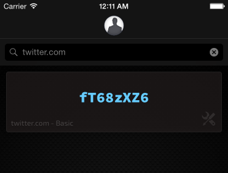

Stop writing down your passwords.
Stop storing your passwords in a "secure" place, such as a vault, a keychain, an app or "the cloud".
In fact, just stop thinking about passwords at all.
Master Password users have no more passwords. They have a password. Their password is their single master key for unlocking all doors.
As a Master Password user, there are about three steps to entering any site:
Most browsers will then ask you to "save" the site's password. For most people, this is a good idea and will subsequently allow you to log in without having to use Master Password at all.
Depending on how many sites you currently hold active accounts on, this is likely going to be your biggest curve.
Master Password generates passwords for you to use. That means, you cannot use your old passwords with it (in truth, you could, but that would defeat the purpose - you shouldn't).
For every site where you currently hold an account:
Sorry, you'll have to log into the site once with your old password and update the password to the new and much stronger password Master Password has generated for you.
For every site you sign up with from now on:
Simple: stop trying to come up with a good new password for your next account. Just copy/paste Master Password's generated password for this site into the password and confirm password fields.
All right. Here's Robert on his iPhone:
He wants to sign up for Twitter. Robert filled in all the fields, except for password. Not wanting to worry about what his twitter secret is going to be, he switches to Master Password.
Of course, he begins by unlocking his user with his master password. Robert can skip this step by going into Master Password's preferences and setting it to either save his master key or remember his login, but he choses not to.

twitter.com. He knows not to use mobile.twitter.comTwitterrmitchell@twitter.com,
superbob@twitter.com.
Optional:

If the account Robert's signing up for is with a website that prohibits symbols for some daft reason, Robert can change the type to Basic or something similar instead. Robert can also bump up the complexity to get an even more secure password if he wants.
When Robert created the site in Master Password, it copied the password to his pasteboard. Now, Robert just switches back to Safari and pastes his brand-new password he doesn't care to remember in twitter's password field. All done!
More complicated than what, exactly? Using robert17 for all your sites? Well, yes. That's also rather the point.
The point is to eliminate the many sources of insecurities related to password authentication, and yet keeping the process surprizingly trivial. What you get in exchange for these two extra first-time only steps is very robust, unique passwords which are not hackable even from a site's leaked password hashes, in addition to the freedom to forget all about passwords. Entirely.
I shall not endeavour to quarrel with the point on the awesome scale of your other password manager. That said, Master Password was designed from the ground up specifically because of the many flaws that existed in all the popular password managers at the time. And the times haven't changed for the better since.
I'm going to provide an excessively brief description of the primary flaws other password managers suffer, which Master Password is free from. Please contact me if you have something to add, ask or correct.
While each of these services have many great pros, I will only mention those that Master Password lacks.
Pros: Some allow you the ability to change your master password or reset it if you forgot it.
Cons: Your vault needs to be backed up, and you can only access your passwords if you can access the vault. Syncing the vault to all your devices is troublesome and generally relies on uploading your secrets to a company's servers. Total data loss is catastrophic.
Pros: Some allow you the ability to change your master password or reset it if you forgot it. Some support "two-factor" authentication.
Cons: Access to your secrets depends on an active data connection. You've given the keys to your global digital identity to some company you probably shouldn't trust as much as you wish you could. Their website stating that they "can't access your data" doesn't change this, nor does it make any assurances about tomorrow.
Pros: They got the same idea as us! Yay!
Cons: Sadly, nearly all of these, while claiming the same benefits as Master Password, suffer from critical flaws which either defeat their benefits (reverting them to mere password vaults) or use critically weak crypto, with the result of actually making it trivial to reverse your master password - and by extension, access to all your accounts.
Master Password also has cons. Let's be frank and list the cons that the other solutions generally don't suffer:
Cons: Changing your master password requires you to update all your site passwords. A compromised or forgotten master password requires you to do the same.
There are some other cons, which I consider "fake cons", with a justification of why I label them as such:
Master Password's generated passwords only work if you use the password generated for you. You cannot use a password somebody else gave you. Only - you can: Master Password implements a hybrid solution, allowing you to save custom passwords in the app. They are AES encrypted with your master key, but like all vault-based password managers, are not immune to loss if you ever lose your phone and backups..
Uh, no. If you forgot your master password, you're probably an alien replica of yourself. So no, you can't reset. If you're not a replica, just make a new user with a new master password and reset all your site passwords. Remember your master password this time.
Two factor authentication is defined as authenticating yourself with two methods that are so distinct that a single attack cannot compromise both. Many sites claim to use two-factor authentication but actually rely only on an extra password hidden in an app on your phone or computer. If an attacker can steal your master password, he can probably download the hidden password too. Or read in your two-factor response while you're typing it in. On top of that, you're using a password manager: after your "two-factor" authentication, you get a single password to perform another one-factor authentication with a site. As a hacker, I'd go for the weakest link to break your chain.
A very valid question, and arguably the most important one to ask!
Trust is a very difficult thing to guarantee. Powerful entities will solicit your trust by appearing with it and coming well recommended. Trust can also be assured by legalese or contracts. If you have the means and energy to hold an entity responsible for his claims and actions, this might be sufficient for you.
Most of us mere mortals cannot afford this level of trust enforcement, however. We're mostly left in the position of trusting claims blindly, in the hopes that companies will not violate those claims for fear of taking a seizable public-relations hit.
In fact, Master Password is what it is because it aims to avoid any requirement of trust in the solution's author. Master Password requires no services or proprietary storage format. I've published Master Password's algorithm for you to inspect and licensed to you the full source code to the implementations for you to use.
What that gives you, is the ability to either inspect and learn how Master Password works or to take this information to a professional (be it an academic, mathematician or payed developer) and have him do this for you.
While at first glimpse, this may not seem terribly useful to you - particularly when you don't have the skill set to perform this verification yourself - but it's actually a pretty big deal to show your naked self as proof of having nothing to hide. If you want to go all the way, you could even build the application from scratch rather than rely on the binaries provided by our distributions.
This is the closest we can get to voiding any need for trust in Master Password, and it's more than you're likely to find in most other popular password solutions.